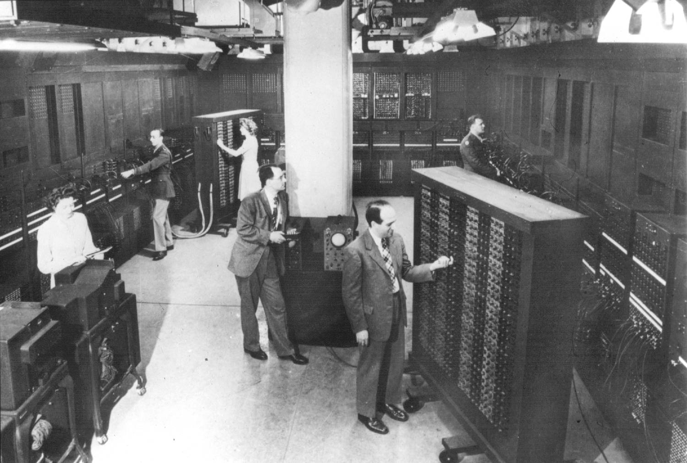

Timeline da programação
Débora de Melo Távora
Francisco Apoliano de Morais Junior
1951 - 1959
Válvulas guardavam a informação
Cilindro magnético: dispositivo de memória
Unidades de fita magnética (entrada/saída)

1959 - 1965
Transistor como principal componente de hardware
Memória feita a partir de núcleos magnéticos
Disco magnético substitui as fitas magnéticas
1965 - 1971
Circuitos integrados pegam o lugar das placas de circuito
Introdução do terminal (entrada/saída): tela e teclado

1971 - 2019
Integração em larga escala
Computador pessoal
Apple, Tandy/Radio Shack, Atari, Commodore, Sun
1951 - 1959
FORTRAN: linguagem para aplicações numéricas
COBOL: aplicações de negócios
LISP: inteligência artificial
Programadores de sistema: escreviam ferramentas como montadores e compiladores